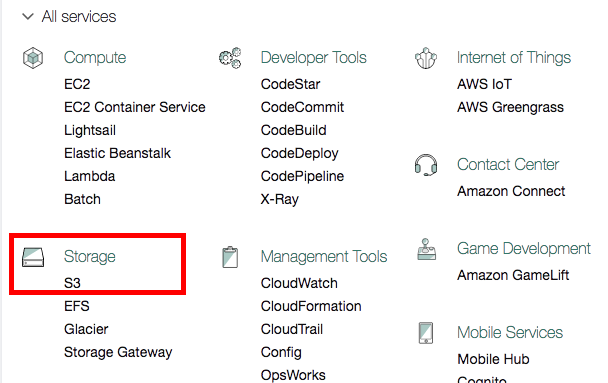
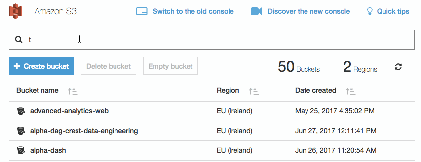

Part 3 Working with big datasets and sharing them: Accessing data in Amazon S3
Amazon S3 is used as the primary storage area for large data files. In contrast to files in your personal home directory, files in S3 can be accessed by multiple Platform users. You will only be able to access buckets that you have been granted access to (see User Administration).
3.1 Importing data from S3 into R
There are currently two methods of browsing and importing data held in S3 into RStudio.
3.1.1 User Interface
We have developed a user interface that allows you to search and browse the files that you have been given access to.
You can install the package as follows:
install.packages("devtools")
devtools::install_github("moj-analytical-services/s3browser")See the documentation for further details.
3.1.2 Command line tool
We have also developed a command line tool that provides you with some helper function. This enables you to do things like write read_s3_csv to read directly from S3 into a data frame in R.
You can install this package as follows:
install.packages("devtools")
devtools::install_github("moj-analytical-services/s3tools")See the documentation for further details.
3.2 Uploading data to S3
3.2.1 Where data is stored
An S3 bucket is automatically created for every team; for how to create and manage teams see User Administration. By default, all members of the team have read and write access to the bucket.
3.2.2 Uploading data
In Amazon S3 storage areas are refered to as ‘Buckets’. To access the buckets you need to visit the Amazon management console with the following link: https://alpha-analytics-moj.eu.auth0.com/samlp/NpfImg4P3ynU6HFx7ivYmqUZWQHfwi3Y (if you regularly upload data it may be worth bookmarking this link).
Authentication is managed by GitHub, so if this is the first time you are connecting to the Amazon S3 Management console you may have to approve it.
You’ll be able to see all buckets, including those you do not have access to.
To upload data, find the bucket you want to upload data to. Within the bucket you can create folders and upload files by following the on screen instructions. When uploading files you will be prompted to set the settings for that file. If this happens, the default settings are okay.
3.2.2.1 Step-by-step instructions
Use the following link to login
Select the S3 service 
Select the bucket you wish to upload data to (the bucket will have the same name as the team, but spaces are replaced with
-and all letters are lower case, soTest Teamwill have a bucket calledtest-team). While in alpha all buckets will also have the alpha prefix.
You’ll notice two buckets are created; use the one prefixed alpha- and ignore the one prefixed dev-.
The easiest way is to use the search: 
- Use the interface to create folders or upload files. Note: The default settings are fine.
3.2.2.2 Manipulating data
You can also move, rename and delete data using the S3 management console. Select the files by checking the text box, use the More button so see the options.